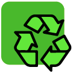
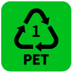
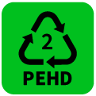
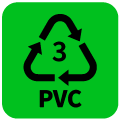
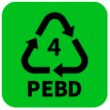
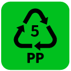
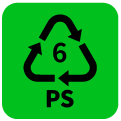
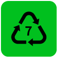
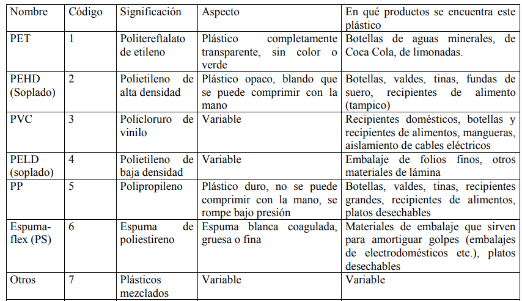

Anillo de Möbius:
Las tres flechas hacen referencia a las 3 erres: Reusar, Reducir y Reciclar. Esto quiere decir que los materiales con los que se ha fabricado un producto se pueden reciclar. Si el anillo aparece dentro de un círculo significa que los materiales con los que se han fabricado el producto son reciclados.
Punto verde:
Los materiales se pueden reciclar para darles una nueva vida útil.

PET 1 o PETE: Plástico más usado tanto para envases de alimentos y bebidas como para textiles. Es el de las botellas de refresco, de agua, botes de mayonesa, enjuague bucal, aceite, vinagre y otros. Por lo general es de un solo uso y es transparente. Es altamente reciclable, se puede convertir en muebles, bolsos, paneles para la construcción y otro tipo de envases.

PET 2 o HDPE: Lo encuentras principalmente en empaques y en contenedores de leche, jugos, detergentes, cloro, champú, algunas bolsas de residuos, bolsas de cereal, botes de aceite de carro, vasitos de yogurt. También son altamente reciclables.

PET 3 (vinil): Lo encuentras como envase para algunos productos de limpieza, en los empaques de comida transparentes, equipos médicos, ventanas y plomería de PVC. Pocas veces se recicla.

PET 4 o LDPE (polietileno de baja densidad): Se utiliza para las botellas que se pueden exprimir, para empaques de comida congelada, bolsas gruesas de tiendas, ropa, muebles, alfombras. No todos son reciclables y en pocos sitios los aceptan. Pero pueden transformarse en botes para los residuos, sobres para envíos por correo, paneles y otros materiales para la construcción.

PET 5 (polypropylene): Normalmente está en las tapas de envases de rosca, pajillas, algunos vasos y platos desechables, frascos para medicinas. Aceptan líquidos de altas temperaturas. En los pocos sitios en los que se reciclan los convierten en semáforos, cables para baterías, escobas y brochas, bandejas de cafetería y contenedores de distintos tipos.

PET 6 (poliestireno): Está en las bandejitas de queso y las carnes que compramos en el mercado, en vasos, rellenos de cojín, “cartones” de huevos, cajas de CDs, aislantes, embalaje. Es muy difícil de reciclar.

PET 7 (Varios): Son todos los que no caben en las otras categorías: protectores de celular, MP3 o computadoras, materiales blindados, lentes de sol, equipos como DVDs, nylon, señales y exhibidores. No se reciclan.
